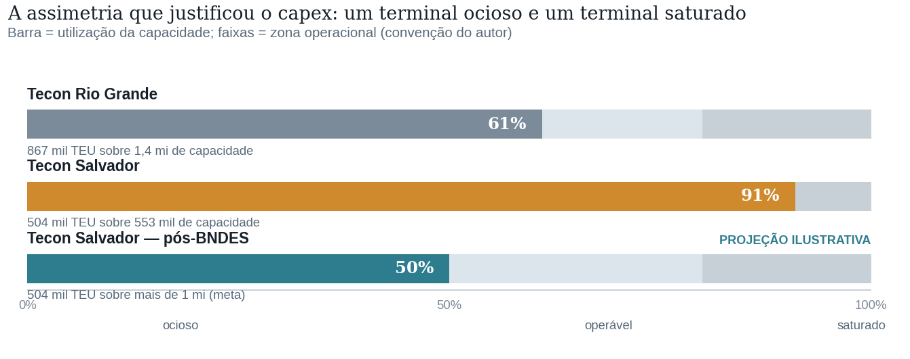
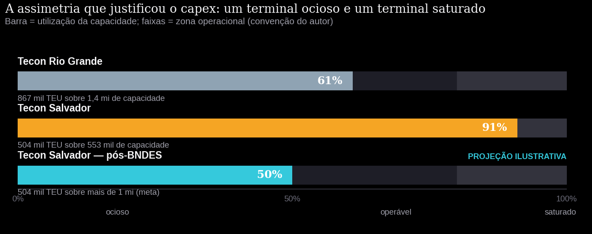
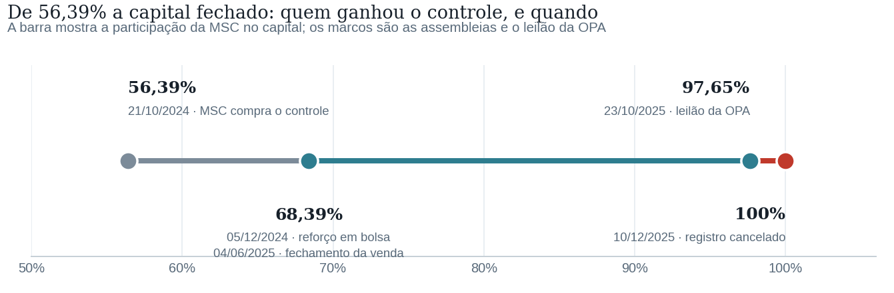
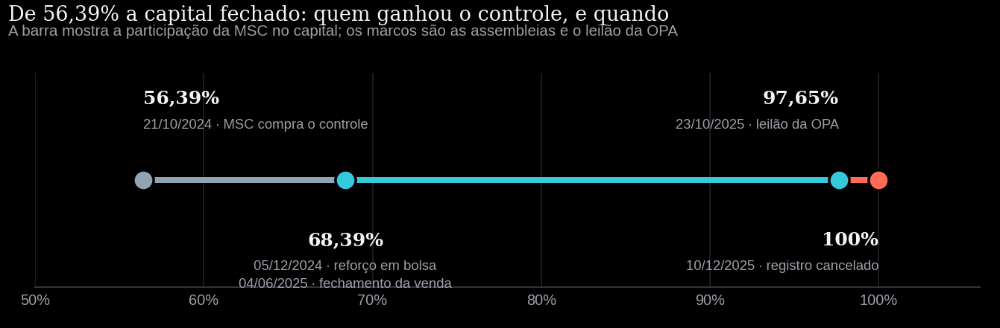
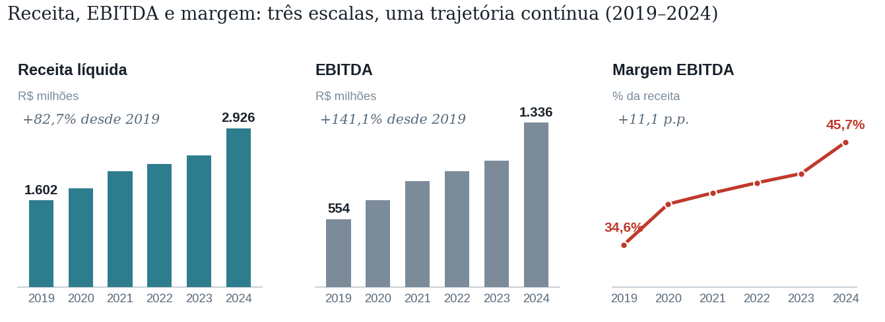
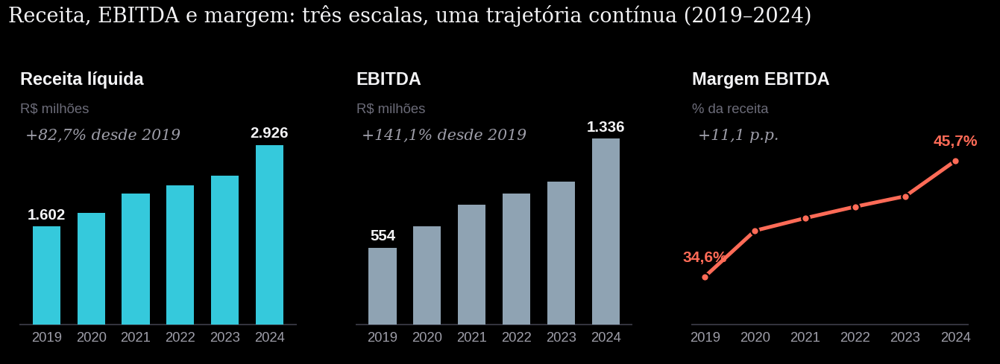

Gráfico 1
A assimetria que justifica o capex


Interpretação — o que este gráfico diz
O que se vê: o Tecon Salvador opera a 91% da capacidade instalada (504 mil TEU movimentados sobre 553 mil). O Tecon Rio Grande opera a 61% (867 mil sobre 1,4 milhão). A barra tracejada é a projeção do Tecon Salvador depois da expansão: com mais de 1 milhão de TEU de capacidade e o mesmo volume, a utilização cai para cerca de 50%.
Por que importa: o investimento não é expansionista — é corretivo. O terminal de Salvador não tinha folga: tinha 9 pontos percentuais de margem. Duplicar a capacidade não é crescimento por crescimento; é tirar a companhia de uma posição em que um mau mês se torna um problema de throughput.
O que este gráfico não prova: que o investimento terá retorno, que o volume acompanhará a capacidade, nem que 504 mil é o número certo — é o número publicado mais recente que consegui verificar. E a projeção dos 50% é aritmética minha sobre metas de capacidade, não uma previsão de tráfego. Inferência
Gráfico 2
Quem controla, e desde quando


Interpretação — o que este gráfico diz
O que se vê: a MSC passa de 56,39% para 68,39% do capital a R$ 17,50/ação; a OPA unificada fecha a 97,65% a R$ 18,53; a AGE aprova o resgate a R$ 18,84; o registo na CVM é cancelado em dezembro. O capital fica fechado e a companhia deixa de ter um float relevante.
Por que importa, para esta vaga: é o que cria a janela pós-M&A (costura C4). Uma operação que passou por venda, OPA e resgate tem, por um tempo, processos de duas origens a correr em paralelo. E é um contexto em que a camada de dados corporate foi reforçada deliberadamente — a frente de dados no Rio, a política de dados de 2024, o Data Viz — o que significa que o terreno da camada analítica está preparado para o que o CLS precisa.
O que este gráfico não prova: nada sobre a organização interna de TI, sobre a estabilidade das equipas ou sobre planos de integração. Uma mudança de controlo societário não é, por si só, evidência de reestruturação da TI. Não extrapolo. Inferência delimitada
Gráfico 3
A trajetória financeira que sustenta o plano


Interpretação — o que este gráfico diz
O que se vê: três séries — receita, EBITDA e margem — numa trajetória contínua, sem quebra de série, ao longo de seis exercícios. A margem é a série que aperta: é a diferença entre crescer e crescer com proveito.
Por que importa: uma companhia que vai quase dobrar a capacidade de um terminal e simultaneamente aumentar o custo de o operar (pessoal, TI, sistemas) precisa de saber, por processo, onde o custo e onde a receita entram. É a razão económica do Key User existir: é o papel que liga a regra do processo ao número que a companhia comunica.
O que este gráfico não prova: a trajetória até 2024 não diz nada sobre o ano de 2026, nem sobre a incorporação da expansão do Tecon. É contexto, não previsão. Inferência delimitada
O inventário
Todos os números do documento, com a fonte
| Número | Fonte | Data da fonte | Confiança |
|---|---|---|---|
| 56,39% → 68,39% do capital | Arquivo de RI (mziq) · CVM RAD | 2025 | F |
| R$ 17,50/ação (venda à MSC) | RI · B3 | 04/06/2025 | F |
| OPA unificada 97,65% a R$ 18,53 | Edital de OPA na B3 · CVM | 23/10/2025 | F |
| Resgate por AGE a R$ 18,84 | CVM RAD | 03/12/2025 | F |
| Cancelamento do registo na CVM | CVM RAD | 10/12/2025 | F |
| DCF R$ 16,48 · VWAP-3M R$ 17,08 · EV/EBITDA 6,55× | Laudo Apsis, base 31/12/2024 | 2025 | F |
| Preço pago ≈ 2,5% acima do laudo | Cálculo sobre Apsis e preço da venda | — | I |
| R$ 848 milhões (BNDES, Fundo da Marinha Mercante) | BNDES | Aut. 2024 · apr. 2025 | F |
| 553 mil → mais de 1 milhão TEU/ano | BNDES · resultados da companhia | 2025–2026 | F |
| 70 → mais de 100 contêineres/hora | Resultados da companhia | 2025 | F |
| 504 mil TEU sobre 553 mil (91% de utilização) | Resultados da companhia | 2025 | F |
| Tecon Rio Grande: 867 mil sobre 1,4 milhão (61%) | Resultados da companhia | 2025 | F |
| Cerca de 1.400 empregos na obra | BNDES | 2025 | F |
| Tratores elétricos movem 50% do pátio | Resultados da companhia | 2025 | F |
| Receita, EBITDA e margem 2019–2024 | Demonstrações financeiras (arquivo de RI) | 2019–2024 | F |
| 48 vagas abertas no quadro WS (12 em Salvador, 0 de TI/dados) | Quadro Gupy, lido e verificado vaga a vaga | 27/11/2026 | F |
Vaga-alvo 12802194, 6 etapas, Teste de Excel na etapa 3 | Página da vaga (Gupy) | 27/11/2026 | F |
| Banda salarial JR ≈ R$ 3.500–4.500 | Página da vaga (Gupy) | 27/11/2026 | F |
| Janela publicação → encerramento ≤ 19 dias | Medição em n = 1 (vaga 12802194) | 2026 | S |
| Mediana de TI em Salvador: R$ 5.630/mês | CAGED · Recoloca (736 admissões) | 2026 | I |
| DI desliga em 10/12/2026 | Cronograma de desligamento de DI (v30, 13/11/2026) | 13/11/2026 | F |
| Documentação técnica da Duimp (Ato Técnico Conjunto 11/2026) | CGIBS | 10/11/2026 · publ. 12/11 | F |
| NF-e de IBS/CBS para importações via DUIMP obrigatória a 01/01/2027 | Legislação do DUIMP (RFB · Siscomex · CGIBS) | 2026 | F |
Como ler a coluna da confiança: F — facto medido e reproduzível, com a fonte identificada. I — inferência minha, com o raciocínio escrito no texto. S — sem base suficiente; a janela de 19 dias é uma observação de uma única vaga, não uma estatística.
Limites
O que eu não sei — e o que isso impede
Esta é a secção mais importante do documento. Um diagnóstico que só sabe o que sabe lê-se como propaganda; um diagnóstico que declara os seus limites lê-se como trabalho.
| # | O que não sei | Porquê | O que impede |
|---|---|---|---|
| L1 | Como estão hoje os 6 processos do CLS | Não tenho acesso a sistema nem a processo | Não posso dizer o que já está pronto. A Fase 1 existe para isto. |
| L2 | Quantas decisões atravessam a fronteira Rio–Salvador por mês | Não há dado público | Não posso dimensionar a costura C1 — só identificá-la. |
| L3 | A latência entre o evento no pátio e o número no painel | Só se mede com acesso | Não posso dizer se o painel está atrasado. Só que não há forma de o saber. |
| L4 | Quantos Key Users existem e o que cada um sabe | Não é publicado | Não posso dimensionar C6. E esta é a pergunta mais importante para a vaga. |
| L5 | Se a harmonização pós-M&A de processos já terminou | Não é publicado | Não posso dizer se o mapa lado a lado ainda é útil ou é obsoleto. |
| L6 | Quantas pessoas foram entrevistadas em cada vaga encerrada | A Gupy expõe apenas aberto/fechado | Não posso dar taxa de conversão. Não invento percentagens. |
| L7 | Se as vagas ainda listadas nos agregadores estão abertas | Agregadores republicam listas obsoletas | Só o quadro oficial decide. Verificado vaga a vaga. |
| L8 | Se existe medição do investimento já desenhada | Não é publicado | Não posso dizer que o baseline não existe — só propor criá-lo. |
| L9 | Motivo real do encerramento de cada vaga | A Gupy não o expõe | Não especulo. Falo de factos: "vi que fechou, o que posso fazer?" |
| L10 | A estrutura de TI interna, nomes e reporte | Não há fonte pública verificada | Onde apareceria um nome, aparece o cargo. É por isso que o diagrama de stack do site não tem nomes. |
O limite que não posso contornar
Não houve teste, não houve acesso, não houve vulnerabilidade. Este documento não é uma auditoria e não se apresenta como uma. Se me pedirem um relatório de segurança sobre os sistemas da companhia, a resposta honesta é que não tenho base para o produzir — e essa resposta vale mais do que um relatório inventado.